// {{Deck type, e.g. Quarterly team review}}
{{Deck title}}
{{One quiet subtitle line.}}
{{Author / team}}
{{YYYY-MM-DD}}
// Agenda
What this covers
{{Point one}}
{{Point two}}
{{Point three}}
{{Deck title}}
2
// Headline numbers
{{Metric slide title}}
{{value}}
{{label}}
{{value}}
{{label}}
{{value}}
{{label}}
{{Deck title}}
3
// Trend
{{Chart slide title}}
{{Deck title}}
4
// Next steps
Decisions needed
{{Ask one}}
{{Ask two}}
{{Deck title}}
5
1 / 1